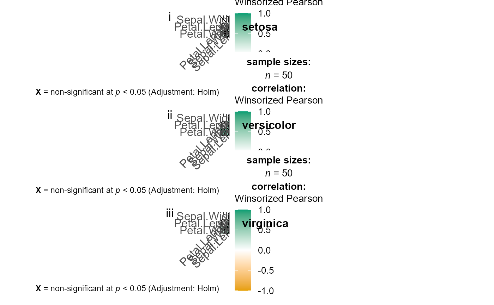

grouped_ggcorrmat(
data,
cor.vars = NULL,
grouping.var,
title.prefix = NULL,
output = "plot",
plotgrid.args = list(),
annotation.args = list(),
...
)
Arguments
| data |
Dataframe from which variables specified are preferentially to be
taken. |
| cor.vars |
List of variables for which the correlation matrix is to be
computed and visualized. If NULL (default), all numeric variables from
data will be used. |
| grouping.var |
A single grouping variable (can be entered either as a
bare name x or as a string "x"). |
| title.prefix |
Character string specifying the prefix text for the fixed
plot title (name of each factor level) (Default: NULL). If NULL, the
variable name entered for grouping.var will be used. |
| output |
Character that decides expected output from this function. If
"plot", the visualization matrix will be returned. If "dataframe" (or
literally anything other than "plot"), a dataframe containing all details
from statistical analyses (e.g., correlation coefficients, statistic
values, p-values, no. of observations, etc.) will be returned. |
| plotgrid.args |
A list of additional arguments passed to
patchwork::wrap_plots, except for guides argument which is already
separately specified here. |
| annotation.args |
A list of additional arguments passed to
patchwork::plot_annotation. |
| ... |
Arguments passed on to ggcorrmat
cor.vars.namesOptional list of names to be used for cor.vars. The
names should be entered in the same order. partialCan be TRUE for partial correlations. For Bayesian partial
correlations, "full" instead of pseudo-Bayesian partial correlations (i.e.,
Bayesian correlation based on frequentist partialization) are returned. matrix.typeCharacter, "upper" (default), "lower", or "full",
display full matrix, lower triangular or upper triangular matrix. sig.levelSignificance level (Default: 0.05). If the p-value in
p-value matrix is bigger than sig.level, then the corresponding
correlation coefficient is regarded as insignificant and flagged as such in
the plot. Relevant only when output = "plot". colorsA vector of 3 colors for low, mid, and high correlation values.
If set to NULL, manual specification of colors will be turned off and 3
colors from the specified palette from package will be selected. pchDecides the point shape to be used for insignificant correlation
coefficients (only valid when insig = "pch"). Default: pch = "cross". ggcorrplot.argsA list of additional (mostly aesthetic) arguments that
will be passed to ggcorrplot::ggcorrplot function. The list should avoid
any of the following arguments since they are already internally being
used: corr, method, p.mat, sig.level, ggtheme, colors, lab,
pch, legend.title, digits. typeA character specifying the type of statistical approach.
Four possible options:
"parametric"
"nonparametric"
"robust"
"bayes"
Corresponding abbreviations are also accepted: "p" (for parametric),
"np" (for nonparametric), "r" (for robust), or "bf" (for Bayesian).trTrim level for the mean when carrying out robust tests. In case
of an error, try reducing the value of tr, which is by default set to
0.2. Lowering the value might help. kNumber of digits after decimal point (should be an integer)
(Default: k = 2L). conf.levelScalar between 0 and 1. If unspecified, the defaults
return 95% confidence/credible intervals (0.95). bf.priorA number between 0.5 and 2 (default 0.707), the prior
width to use in calculating Bayes factors and posterior estimates. p.adjust.methodAdjustment method for p-values for multiple
comparisons. Possible methods are: "holm" (default), "hochberg",
"hommel", "bonferroni", "BH", "BY", "fdr", "none". packageName of the package from which the given palette is to
be extracted. The available palettes and packages can be checked by running
View(paletteer::palettes_d_names). paletteName of the package from which the given palette is to
be extracted. The available palettes and packages can be checked by running
View(paletteer::palettes_d_names). ggthemeA function, ggplot2 theme name. Default value is
ggplot2::theme_bw(). Any of the ggplot2 themes, or themes from
extension packages are allowed (e.g., ggthemes::theme_fivethirtyeight(),
hrbrthemes::theme_ipsum_ps(), etc.). ggstatsplot.layerLogical that decides whether theme_ggstatsplot
theme elements are to be displayed along with the selected ggtheme
(Default: TRUE). theme_ggstatsplot is an opinionated theme layer that
override some aspects of the selected ggtheme. ggplot.componentA ggplot component to be added to the plot prepared
by ggstatsplot. This argument is primarily helpful for grouped_
variants of all primary functions. Default is NULL. The argument should
be entered as a ggplot2 function or a list of ggplot2 functions. subtitleThe text for the plot subtitle. Will work only if
results.subtitle = FALSE. captionThe text for the plot caption. |
References
https://indrajeetpatil.github.io/ggstatsplot/articles/web_only/ggcorrmat.html
See also
Examples

#> Warning: Series not converged.
#> Warning: Series not converged.
#> Warning: Series not converged.
#> Warning: Series not converged.
#> # A tibble: 60 x 15
#> vore parameter1 parameter2 estimate conf.level conf.low conf.high pd
#> <chr> <chr> <chr> <dbl> <dbl> <dbl> <dbl> <dbl>
#> 1 carni sleep_total sleep_rem 0.845 0.95 0.641 0.961 1
#> 2 carni sleep_total sleep_cycle 0.204 0.95 -0.351 0.764 0.698
#> 3 carni sleep_total awake -1.00 0.95 -1.00 -1.00 1
#> 4 carni sleep_total brainwt -0.382 0.95 -0.759 0.0549 0.895
#> 5 carni sleep_total bodywt -0.379 0.95 -0.662 -0.0654 0.960
#> 6 carni sleep_rem sleep_cycle 0.0548 0.95 -0.534 0.587 0.562
#> 7 carni sleep_rem awake -0.848 0.95 -0.962 -0.678 1
#> 8 carni sleep_rem brainwt -0.308 0.95 -0.760 0.252 0.804
#> 9 carni sleep_rem bodywt -0.371 0.95 -0.716 0.0694 0.899
#> 10 carni sleep_cycle awake -0.205 0.95 -0.754 0.373 0.690
#> rope.percentage prior.distribution prior.location prior.scale bayes.factor
#> <dbl> <chr> <dbl> <dbl> <dbl>
#> 1 0 beta 1.41 1.41 112.
#> 2 0.168 beta 1.41 1.41 0.714
#> 3 0 beta 1.41 1.41 NA
#> 4 0.116 beta 1.41 1.41 1.13
#> 5 0.078 beta 1.41 1.41 1.72
#> 6 0.206 beta 1.41 1.41 0.621
#> 7 0.0118 beta 1.41 1.41 112.
#> 8 0.136 beta 1.41 1.41 0.848
#> 9 0.124 beta 1.41 1.41 1.03
#> 10 0.165 beta 1.41 1.41 0.714
#> method n.obs
#> <chr> <int>
#> 1 Bayesian Pearson correlation 10
#> 2 Bayesian Pearson correlation 5
#> 3 Bayesian Pearson correlation 19
#> 4 Bayesian Pearson correlation 9
#> 5 Bayesian Pearson correlation 19
#> 6 Bayesian Pearson correlation 5
#> 7 Bayesian Pearson correlation 10
#> 8 Bayesian Pearson correlation 6
#> 9 Bayesian Pearson correlation 10
#> 10 Bayesian Pearson correlation 5
#> # ... with 50 more rows
# }